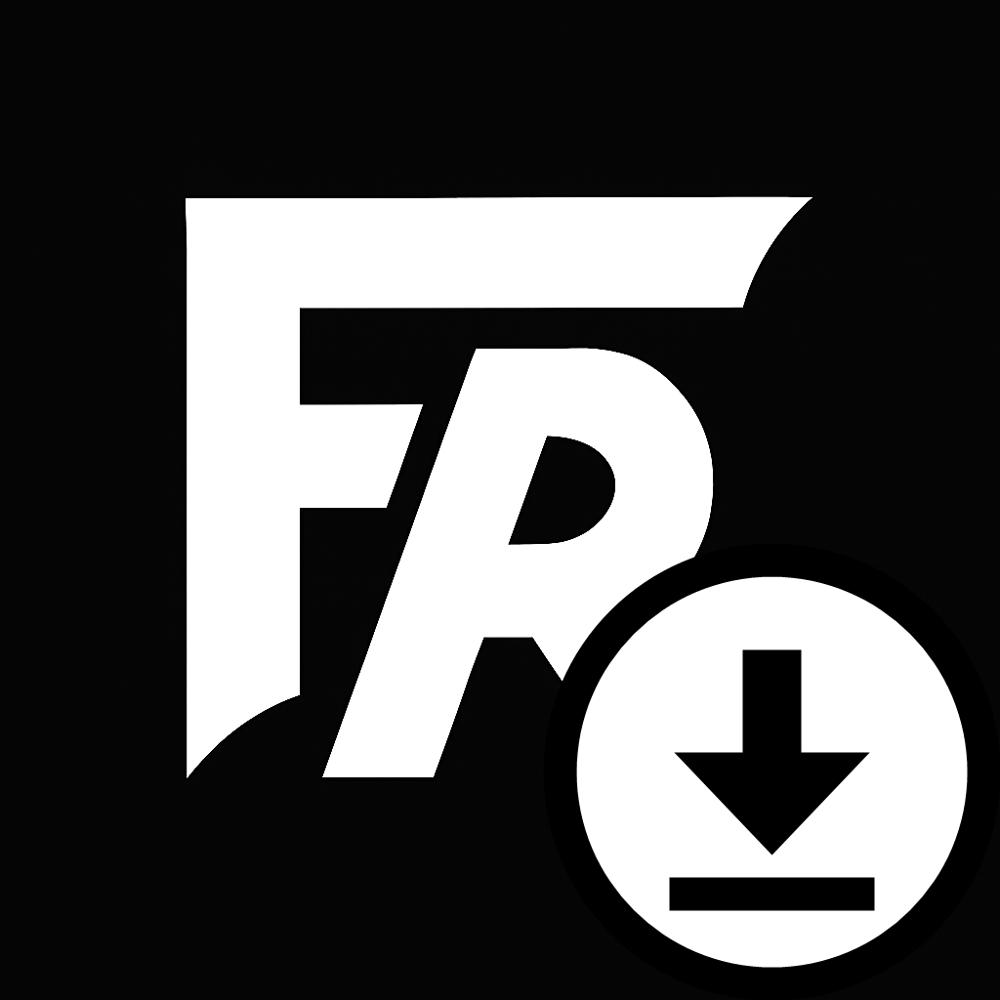
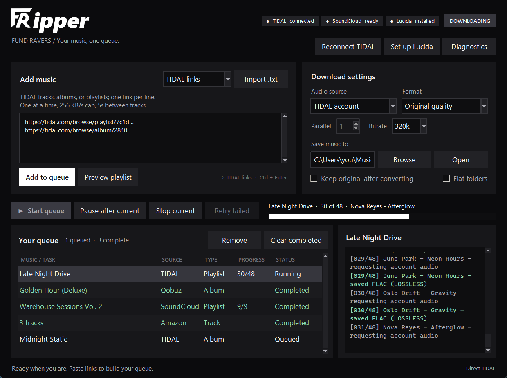

Your music.
One queue.
Paste links. Press start. Keep every track in original quality.
Free for Windows & Mac
Link in bio
Paste links from TIDAL, SoundCloud and more. FRipper queues them and saves every track in original quality.

Paste a playlist, album or track. FRipper builds the queue, tracks progress and saves the real files.
A free desktop app that turns music links into a download queue and saves every track in original quality.
Playlists, albums or tracks, one per line. FRipper detects the service for you.
Keep original quality, or convert to MP3, FLAC, AAC and more.
Watch live progress while your music lands in its own folders.
Your own TIDAL subscription, SoundCloud, plus Amazon Music and Qobuz through Lucida.
One track at a time, with speed caps and automatic pauses.
TIDAL uses its official sign-in. Sessions stay encrypted on your PC.
The installer sets up everything, and FRipper pins to your taskbar or Dock.
Free for Windows 10/11 and macOS 11+.

Paste links. Press start. Keep every track in original quality.
Night#0B0B0D
Panel#17171A
Signal#FFFFFF
Done#8FDCB4 · state only
Direct and calm. Say what happens next: "Paste links. Press start." Never promise what a service does not offer.
TIDAL, SoundCloud, Amazon Music or Qobuz. One per line, or import a .txt file.
FRipper detects the service, groups tracks and albums, and keeps playlist order.
Live progress per track. Files are checked before a job is marked complete.